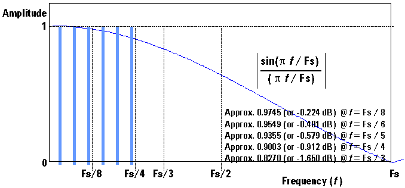
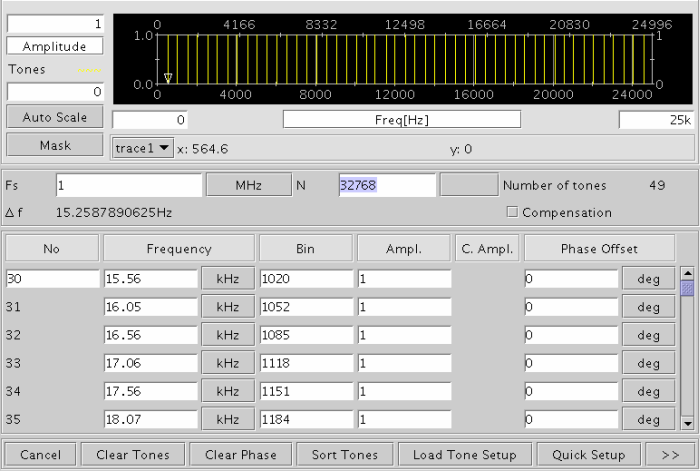
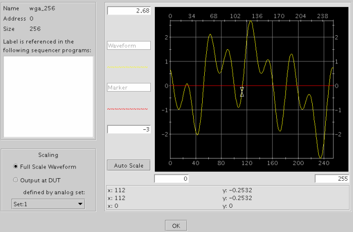

Compensating Amplitudes for sin(x)/x Roll-off
You can automatically compensate the amplitudes of the specified frequency bins for the sin(x)/x roll-off effect, which is the effect on the frequency-domain and is inherent in digital-to-analog conversion (its output hold operation). This compensation is optional since the roll-off becomes noticeable when the frequency exceeds Fs/8, where Fs is the sampling frequency and is specified in the Multitone Generation dialog window shown below. At Fs/8, the sin(x)/x roll-off is approximately -0.224 dB.

To perform this compensation, select the Compensation check box in the Multi-tone Generation dialog window after or before entering the amplitudes in the Ampl column. The amplitudes after the compensation are displayed automatically in the C.Ampl column of the dialog window.

The rest of the operations to create the multitone signal are the same as when the compensation is not selected. In the Phase Algorithm Setup dialog window and the Generated Waveform dialog window, the PRR (Peak-to-RMS-Ratio) is calculated from the compensated waveform.
When the compensation is selected, the compensated multitone waveform is created from the C.Ampl values by the IFFT process. After the IFFT process, the compensated multitone waveform is normalized to an amplitude of ±0.5. Note that the compensated waveform is not displayed in any window. All windows in the Signal Analyzer and Analog Setup Tool display the expected theoretical output waveform, which is equivalent to the waveform that is created from the amplitudes you specified in the Ampl column and that is normalized with the same ratio as when the compensated waveform is normalized to ±0.5. Thus, the displayed waveform can be slightly smaller than ±0.5.
When you download the created multitone waveform in the dialog box that opens by choosing the Download Waveform button on the Signal Analyzer main window, the compensated waveform is downloaded in the AWG waveform memory.
In the Analog Setup Tool, when you display the multitone waveform for which the compensation is selected, the indication of "Compensated Waveform" is displayed in the window. As already described, the displayed waveform is the expected theoretical output waveform.

When a multitone waveform with the compensation is displayed on the main window, you can perform the following operations for the compensated waveform.
- Download Waveform button: You can download the compensated waveform into the AWG waveform memory using the dialog box that opens by this button.
- Download Vector button: You can download the compensated waveform into the vector memory using the dialog box that opens by this button.
- DSM button: You can export the compensated waveform into a DSM data file using the dialog box that opens by this button.
- Translate button:You can transform the compensated waveform by performing a mathematical operation using the dialog box that opens by this button.
In this opened dialog box, the Equation field and the "transform to +-0.5" button support the compensated waveform.
For using the Equation field, the specified transformation is performed for both the compensated waveform and the displayed waveform.
For using the "transform to +-0.5" button (after you transform the waveform by using the Equation field), the compensated waveform is scaled up/down so that the waveform amplitude fits to ±0.5, and the displayed waveform is scaled up/down by the ratio that is used when the compensated waveform is normalized to ±0.5.
The Calc FFT button displays the FFT result of the displayed (non-compensated) waveform always.